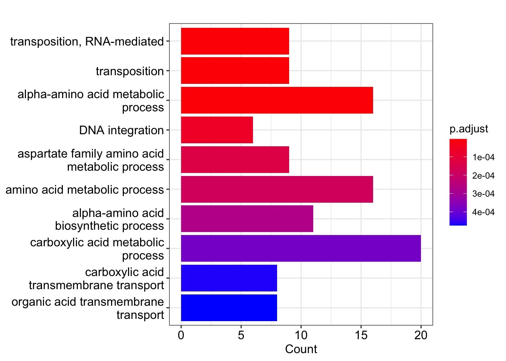
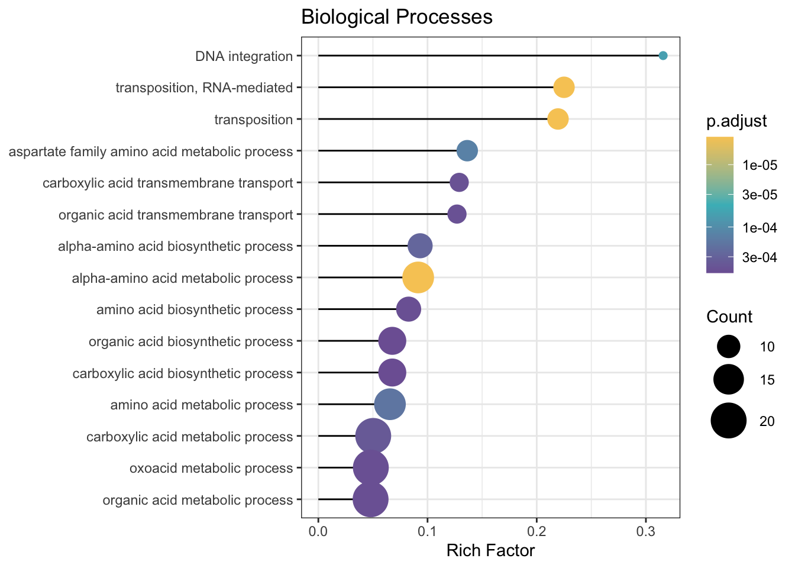
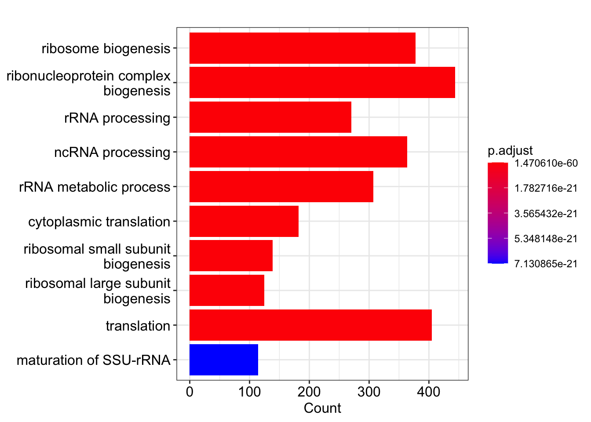
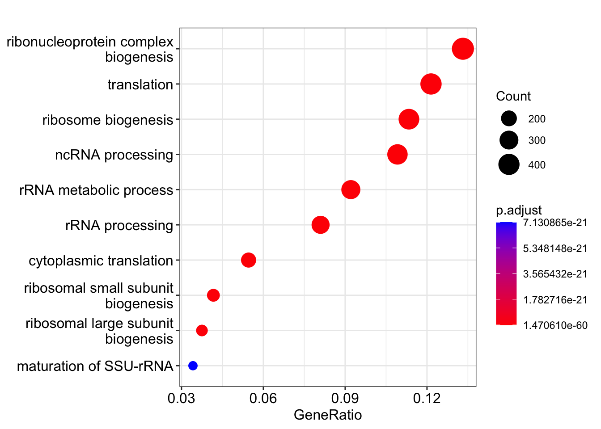
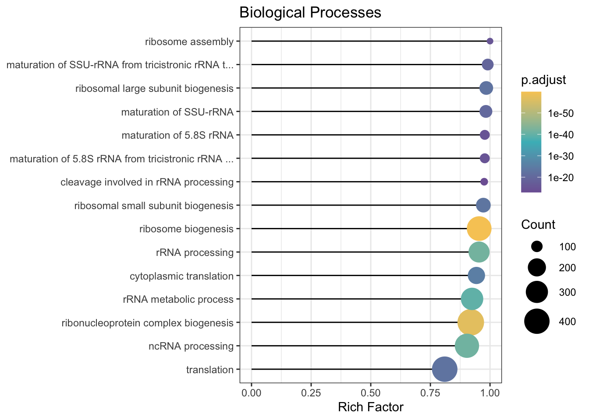
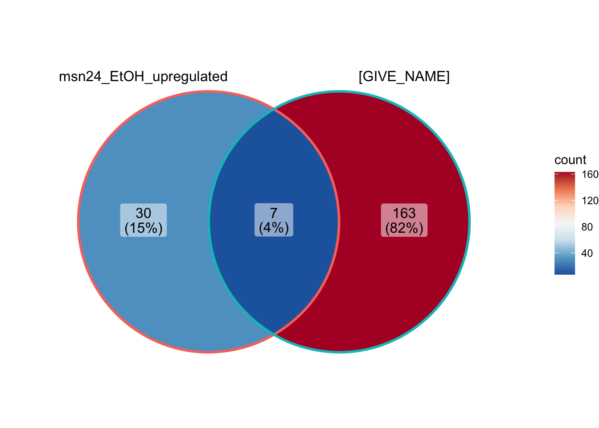

Chapter 2 Gene Ontology
last updated: 2023-10-26
Installing Packages
The following code installs all of the packages used in this document – if not already installed – and then loads the packages into R. We need to install packages specific to our gene ontology bioinformatic analysis. Many of these packages aren’t available on the R CRAN package repository, instead they are hosted on BioConductor repository that is focused on packages used in biological research. Today, we need to install the package clusterProfiler with the code below. The p_load() function will check the bioconductor repository if the package isn’t on CRAN
if (!require("pacman")) install.packages("pacman"); library(pacman)
p_load("tidyverse", "here", "knitr", "dplyr", # already downloaded last activity
"readr","pander", "BiocManager", # also from last activity
"janitor", # for cleaning column names
"igraph", "tidytree", # dependencies that require explicit download on latest Mac OS
"ggVennDiagram", # visualization venn diagram
"clusterProfiler", # for GO enrichment
"AnnotationDbi", # database of common genome annotations
"org.Sc.sgd.db" # annotation database for S. cerevesiae
)
library(dplyr)2.1 Description
This activity is intended to familiarize you with Gene Ontology analysis and some of the unique challenges that come from working with bioinformatic data.
2.2 Learning outcomes
At the end of this exercise, you should be able to:
- Understand gene ontology and its significance in functional annotation
- learn to perform a GO enrichment & appropriate statistical methods (hypergeometric & Fisher’s exact test) for the enrichment analysis
- interpret & critically evaluate the results of GO enrichment & limitations/challenges
2.3 Analysis Workflow
Let’s use the same file from last class, this time performing GO term enrichment
# assign url to a variable
DE_data_url <- "https://raw.githubusercontent.com/clstacy/GenomicDataAnalysis_Fa23/main/data/ethanol_stress/msn2-4_mutants_EtOH.txt"
# download the data from the web
DE_results_msn24_EtOH <-
read_tsv(file=DE_data_url)## Warning: One or more parsing issues, call `problems()` on your data frame for details,
## e.g.:
## dat <- vroom(...)
## problems(dat)## Rows: 5756 Columns: 18
## ── Column specification ────────────────────────────────────────────────────────
## Delimiter: "\t"
## chr (3): Gene ID, Common Name, Annotation
## dbl (15): logFC: YPS606 (WT) EtOH response, Pvalue: YPS606 (WT) EtOH respons...
##
## ℹ Use `spec()` to retrieve the full column specification for this data.
## ℹ Specify the column types or set `show_col_types = FALSE` to quiet this message.2.4 Get DE gene list
We need a list of deferentially expressed genes to test for over or under enrichment of terms. Here we choose genes with significantly (FDR<0.05) higher expression (log2-fold change (logFC) greater than 1) in the msn2/4ΔΔ mutant’s EtOH response compared to the wild-type strains EtOH response (positive values in the logFC column of WT vs msn2/4ΔΔ: EtOH response).
# subset to just genes with significant fdr & log2FC>1
msn24_EtOH |>
filter(log_fc_wt_v_msn2_4dd_et_oh_response > 1 & fdr_wt_v_msn2_4dd_et_oh_response < 0.05) ## # A tibble: 94 × 18
## gene_id common_name annotation log_fc_yps606_wt_et_…¹ pvalue_yps606_wt_et_…²
## <chr> <chr> <chr> <dbl> <dbl>
## 1 YOR315W SFG1 Putative … -5.52 4.33e-31
## 2 YFL051C YFL051C <NA> -4.54 6.37e-27
## 3 YMR016C SOK2 Nuclear p… -3.09 1.32e-32
## 4 YPL061W ALD6 Cytosolic… -7.04 4.96e-26
## 5 YER073W ALD5 Mitochond… -1.88 6.14e-17
## 6 YBL005W… YBL005W-B Retrotran… 1.91 5.46e-13
## 7 YBL039C URA7 Major CTP… -6.95 3.62e-41
## 8 YJL050W MTR4 RNA duple… -4.59 4.73e-36
## 9 YMR241W YHM2 Citrate a… -1.72 1.72e-20
## 10 YIL131C FKH1 Forkhead … -2.20 1.23e-27
## # ℹ 84 more rows
## # ℹ abbreviated names: ¹log_fc_yps606_wt_et_oh_response,
## # ²pvalue_yps606_wt_et_oh_response
## # ℹ 13 more variables: fdr_yps606_wt_et_oh_response <dbl>,
## # log_fc_yps606_msn2_4dd_et_oh_response <dbl>,
## # pvalue_yps606_msn2_4dd_et_oh_response <dbl>,
## # fdr_yps606_msn2_4dd_et_oh_response <dbl>, …# the above command gave us what we want, here it is again but saved to a new variable:
DE_genes_upregulated_msn24_EtOH <-
msn24_EtOH |>
filter(log_fc_wt_v_msn2_4dd_et_oh_response > 1 & fdr_wt_v_msn2_4dd_et_oh_response < 0.05) |>
pull(gene_id) # get just the gene namesNow we have a list of genes (saved as DE_genes_upregulated_msn24_EtOH) that we want to perform GO term enrichment on. Let’s do that now, using the clusterProfiler package’s enrichGO function
GO_msn24_EtOH_up_results <- enrichGO(
gene = DE_genes_upregulated_msn24_EtOH,
OrgDb = "org.Sc.sgd.db",
universe = msn24_EtOH$gene_id,
keyType = "ORF",
ont= "BP"
) |>
# let's add a 'richFactor' column that gives us the proportion of genes DE in the term
mutate(richFactor = Count / as.numeric(sub("/\\d+", "", BgRatio)))Now, we can look at the results in table form.
# open up the results in a data frame to examine
GO_msn24_EtOH_up_results |>
as_tibble() |>
View()
# Here is how we could write this result into a text file:
GO_msn24_EtOH_up_results |>
as_tibble() |>
write_tsv(file = "~/Desktop/GO_msn24_EtOH_up_results.tsv")Now we can visualize the enrichment results, which shows us gene ontology categories that are enriched in genes with higher expression (upregulated) in the WT vs msn2/4ΔΔ: EtOH response.

# a more complicated visualization, with more information density
ggplot(GO_msn24_EtOH_up_results,
showCategory = 15,
aes(richFactor, fct_reorder(Description, richFactor))) +
geom_segment(aes(xend = 0, yend = Description)) +
geom_point(aes(color = p.adjust, size = Count)) +
scale_color_gradientn(
colours = c("#f7ca64", "#46bac2", "#7e62a3"),
trans = "log10",
guide = guide_colorbar(reverse = TRUE, order = 1)
) +
scale_size_continuous(range = c(2, 10)) +
xlab("Rich Factor") +
ylab(NULL) +
ggtitle("Biological Processes") +
theme_bw()
You can try adjusting the size of the output figures by clicking the gear icon in the top right of the code chunk and click “use custom figure size”. Note this updates the chunk header so the change is saved.
2.4.1 Saving ggplot output to a file
We usually want to save our visualizations for later. When plotting with the ggplot package, there is an easy way to do this. See below:
# First, let's create a folder to save our visualizations
dir_visualization <- path.expand("~/Desktop/Genomic_Data_Analysis/Visualization/")
if (!dir.exists(dir_visualization)) {dir.create(dir_visualization, recursive = TRUE)}
# type ?ggsave in the console for more information via the help page.
ggsave(
"GO_BP_msn24_EtOH_up_results_lollipopPlot.pdf",
# if we don't need the image to go to a certain spot, we only need the file name above.
plot = last_plot(), # either the last plot, or name of a ggplot object you've saved.
device = "pdf", #Can be "png", "eps", "ps", "tex" (pictex), "pdf", "jpeg", "tiff", "png", "bmp", "svg" or "wmf" (windows only).
# note that pdf, eps, svg are vector/line art, so zooming doesn't pixelate.
path = dir_visualization, # Path of the directory to save plot to. defaults to work dir.
scale = 2, # multiplicative scaling factor
width = 12,
height = 8,
units = "cm", # must be one of: "in", "cm", "mm", "px"
dpi = 300, # adjusting this larger gives higher quality plot, making a larger file.
limitsize = TRUE, # prevents accidentally making it massive, defaults to TRUE
bg = NULL # Background colour. If NULL, uses the plot.background fill value from the plot theme.
)Recall that when we knit this Rmarkdown notebook, we keep a copy of the plots/images there as well, in the same place as the code and analysis used to generate it. However, we may want a higher resolution file of just the image, or the image in a different format. In this case, saving the plot is a useful option for us. The journal Science has the following recommendations: “We prefer prefer ai, eps, pdf, layered psd, tif, and jpeg files. …minimum file resolution of 300 dpi.”
2.5 The Hypergeometric Distribution in practice
Notice that the DNA integration process does not have very many genes in the category, but they appear to be highly present in the the upregulated gene list. Specifically, DE genes have this GO term, where in the entire genome, there are only genes. What are the odds that we see this by random chance? let’s do the math:
# number of genes that have GO:0015074 (DNA integration)
integration_genes = 23
# number of genes that are DE (msn2/4 EtOH response, logFC>1)
DE_genes = 91
# number of genes that are both DE and DNA integration genes
Overlap = 6
# total number of genes in experiment
total = 5538 # number of genes in genomeWithout doing the math, do you expect these to be underrepresented, overrepresented, or neither?
# test for underrepresentation (depletion)
phyper(q = Overlap, # number of integration genes that were DE
m = DE_genes, # number of DE genes
n = total-DE_genes, # number of non DE genes
k = integration_genes, # number of observed DE DNA integration genes
lower.tail = TRUE) # the probability that X <= x## [1] 0.9999999# test for overrepresentation (enrichmen t)
phyper(q = Overlap-1, # number of integration genes that were DE
# we subtract 1 b/c of lower.tail=FALSE means greater than
# without equality, so have to do one less
m = DE_genes, # number of DE genes
n = total-DE_genes, # number of non DE genes
k = integration_genes, # number of observed DE integration genes
lower.tail = FALSE) # the probability that X > x## [1] 1.344447e-06As we see, there is strong evidence that the number of genes with this GO term is unlikely to be seen due to chance. In layman’s terms, this GO term is enriched in upregulated genes in this contrast. The test for underrepresenation shows there is no support for a hypothesis that this gene is underrepresented in the DE gene list.
Interestingly, the hypergeometric distribution is the same thing as the Fisher’s Exact test, so we can rerun the same tests above with a different command:
#fisher test for underrepresentation
fisher.test(matrix(c(Overlap, DE_genes-Overlap, integration_genes-Overlap, total-DE_genes-integration_genes + Overlap), 2, 2), alternative='less')$p.value## [1] 0.9999999#fisher test for overrepresentation
fisher.test(matrix(c(Overlap, DE_genes-Overlap, integration_genes-Overlap, total-DE_genes-integration_genes + Overlap), 2, 2), alternative='greater')$p.value## [1] 1.344447e-06How does the p-value that we get from this test compare to the results table? They should match.
2.6 Now it is your turn
Try running your own GO enrichment with a different gene list. Some options could be:
- Start with the WT vs msn2/4ΔΔ: EtOH response again, and this time change to “downregulated” (i.e., genes with higher expression in the wild-type strain compared to the msn2/4ΔΔ mutant). These would potentially include genes with defective induction.
- See what happens when you change the FDR threshold from a liberal one (0.05) to a more conservative one (0.01).
- Try different logFC cutoffs.
- Look at different comparisons in the data file (there are 5 total)
- Look at a different GO category (we only looked at BP, not MF or CC)
- Advanced: include multiple filters (e.g., genes upregulated by EtOH stress in the WT strain that ALSO have defective induction during ethanol stress in the msn2/4ΔΔ mutant).
The code below is a template for you to modify to complete this activity. The example code below looks at the downregulated genes in response to stress in the WT (choose something else for your gene list)
# subset to just genes meeting your requirements
DE_genes_GIVE_NAME <- msn24_EtOH |>
# change the below line for the filters that you want
filter(log_fc_yps606_wt_et_oh_response < 1 & pvalue_yps606_wt_et_oh_response<0.05) |>
pull(gene_id) # grabbing just the gene names2.6.3 create plots


# a more complicated visualization, with more information density
ggplot(GO_GIVE_NAME_results,
showCategory = 15,
aes(richFactor, fct_reorder(Description, richFactor))) +
geom_segment(aes(xend = 0, yend = Description)) +
geom_point(aes(color = p.adjust, size = Count)) +
scale_color_gradientn(
colours = c("#f7ca64", "#46bac2", "#7e62a3"),
trans = "log10",
guide = guide_colorbar(reverse = TRUE, order = 1)
) +
scale_size_continuous(range = c(2, 10)) +
scale_y_discrete(label = function(x) stringr::str_trunc(x, 50)) + # cut off long names
xlab("Rich Factor") +
ylab(NULL) +
ggtitle("Biological Processes") +
theme_bw()
2.7 Questions
Answer the following questions:
Which GO term had the smallest adjusted p-value in the upregulated comparison example that we did together?
What percent of the genes would we expect to have that GO term in the DE list under the null hypothesis? What percent of the DE genes actually had that GO term?
For the upregulated comparision, what GO terms are enriched for genes with pval < 0.01 but fdr > 0.01 and what is their average/median log fold change?
For one of your own novel comparisons, explain what comparison you were interested in, and your rationale for the cutoffs you chose for your gene list.
For that novel gene list you chose for yourself, which GO term had the smallest adjusted p-value?
In simple terms, how would you describe what the “Rich Factor” tells about a given GO term in the gene list.
Challenge: create a venn diagram of the GO terms in the GO analysis you ran comparing to the upregulated comparison example.
# create a list of the data we want to compare
GO_results_list <- list(data.frame(GO_msn24_EtOH_up_results)$ID,
data.frame(GO_GIVE_NAME_results)$ID)
# visualize the GO results list as a venn diagram
ggVennDiagram(GO_results_list,
category.names = c("msn24_EtOH_upregulated", "[GIVE_NAME]")) +
scale_x_continuous(expand = expansion(mult = .2)) +
scale_fill_distiller(palette = "RdBu"
)
Be sure to knit this file into a pdf or html file once you’re finished.
System information for reproducibility:
R version 4.3.1 (2023-06-16)
Platform: aarch64-apple-darwin20 (64-bit)
locale: en_US.UTF-8||en_US.UTF-8||en_US.UTF-8||C||en_US.UTF-8||en_US.UTF-8
attached base packages: stats4, stats, graphics, grDevices, utils, datasets, methods and base
other attached packages: org.Sc.sgd.db(v.3.17.0), AnnotationDbi(v.1.62.2), IRanges(v.2.34.1), S4Vectors(v.0.38.2), Biobase(v.2.60.0), BiocGenerics(v.0.46.0), clusterProfiler(v.4.8.2), ggVennDiagram(v.1.2.3), tidytree(v.0.4.5), igraph(v.1.5.1), janitor(v.2.2.0), BiocManager(v.1.30.22), pander(v.0.6.5), knitr(v.1.44), here(v.1.0.1), lubridate(v.1.9.3), forcats(v.1.0.0), stringr(v.1.5.0), dplyr(v.1.1.3), purrr(v.1.0.2), readr(v.2.1.4), tidyr(v.1.3.0), tibble(v.3.2.1), ggplot2(v.3.4.4), tidyverse(v.2.0.0) and pacman(v.0.5.1)
loaded via a namespace (and not attached): RColorBrewer(v.1.1-3), rstudioapi(v.0.15.0), jsonlite(v.1.8.7), magrittr(v.2.0.3), farver(v.2.1.1), rmarkdown(v.2.25), ragg(v.1.2.6), fs(v.1.6.3), zlibbioc(v.1.46.0), vctrs(v.0.6.4), memoise(v.2.0.1), RCurl(v.1.98-1.12), ggtree(v.3.8.2), htmltools(v.0.5.6.1), curl(v.5.1.0), gridGraphics(v.0.5-1), sass(v.0.4.7), KernSmooth(v.2.23-22), bslib(v.0.5.1), plyr(v.1.8.9), cachem(v.1.0.8), lifecycle(v.1.0.3), pkgconfig(v.2.0.3), Matrix(v.1.6-1.1), R6(v.2.5.1), fastmap(v.1.1.1), gson(v.0.1.0), GenomeInfoDbData(v.1.2.10), snakecase(v.0.11.1), digest(v.0.6.33), aplot(v.0.2.2), enrichplot(v.1.20.0), colorspace(v.2.1-0), patchwork(v.1.1.3), rprojroot(v.2.0.3), textshaping(v.0.3.7), RSQLite(v.2.3.1), labeling(v.0.4.3), fansi(v.1.0.5), timechange(v.0.2.0), httr(v.1.4.7), polyclip(v.1.10-6), compiler(v.4.3.1), proxy(v.0.4-27), bit64(v.4.0.5), withr(v.2.5.1), downloader(v.0.4), BiocParallel(v.1.34.2), viridis(v.0.6.4), DBI(v.1.1.3), ggforce(v.0.4.1), MASS(v.7.3-60), classInt(v.0.4-10), HDO.db(v.0.99.1), units(v.0.8-4), tools(v.4.3.1), ape(v.5.7-1), scatterpie(v.0.2.1), glue(v.1.6.2), nlme(v.3.1-163), GOSemSim(v.2.26.1), sf(v.1.0-14), grid(v.4.3.1), shadowtext(v.0.1.2), reshape2(v.1.4.4), fgsea(v.1.26.0), generics(v.0.1.3), gtable(v.0.3.4), tzdb(v.0.4.0), class(v.7.3-22), data.table(v.1.14.8), hms(v.1.1.3), tidygraph(v.1.2.3), utf8(v.1.2.3), XVector(v.0.40.0), ggrepel(v.0.9.4), pillar(v.1.9.0), yulab.utils(v.0.1.0), vroom(v.1.6.4), splines(v.4.3.1), tweenr(v.2.0.2), treeio(v.1.24.3), lattice(v.0.21-9), bit(v.4.0.5), tidyselect(v.1.2.0), GO.db(v.3.17.0), Biostrings(v.2.68.1), gridExtra(v.2.3), bookdown(v.0.36), xfun(v.0.40), graphlayouts(v.1.0.1), stringi(v.1.7.12), lazyeval(v.0.2.2), ggfun(v.0.1.3), yaml(v.2.3.7), evaluate(v.0.22), codetools(v.0.2-19), ggraph(v.2.1.0), qvalue(v.2.32.0), RVenn(v.1.1.0), ggplotify(v.0.1.2), cli(v.3.6.1), systemfonts(v.1.0.5), munsell(v.0.5.0), jquerylib(v.0.1.4), Rcpp(v.1.0.11), GenomeInfoDb(v.1.36.4), png(v.0.1-8), parallel(v.4.3.1), blob(v.1.2.4), DOSE(v.3.26.1), bitops(v.1.0-7), viridisLite(v.0.4.2), e1071(v.1.7-13), scales(v.1.2.1), crayon(v.1.5.2), rlang(v.1.1.1), cowplot(v.1.1.1), fastmatch(v.1.1-4) and KEGGREST(v.1.40.1)